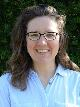
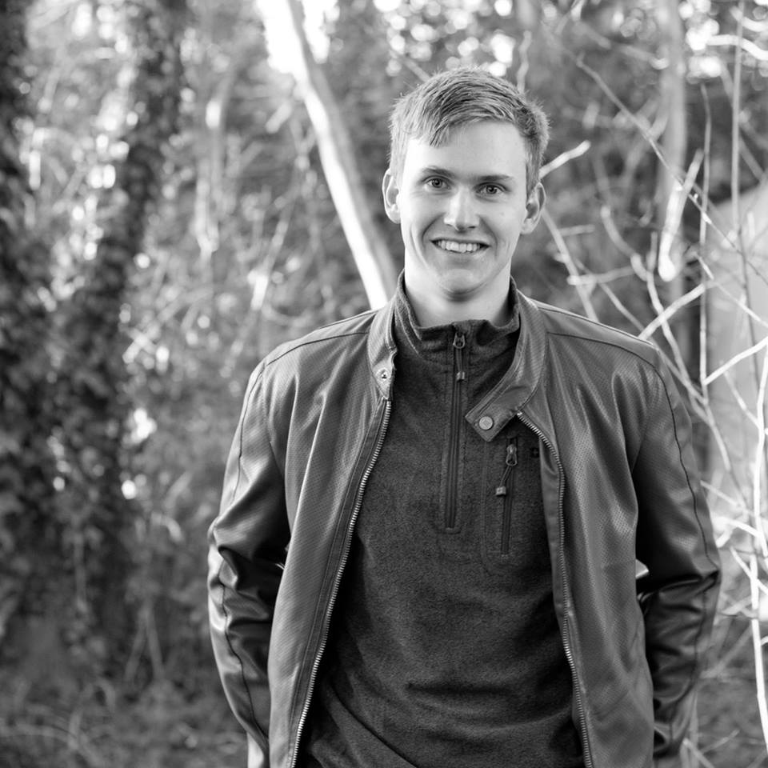
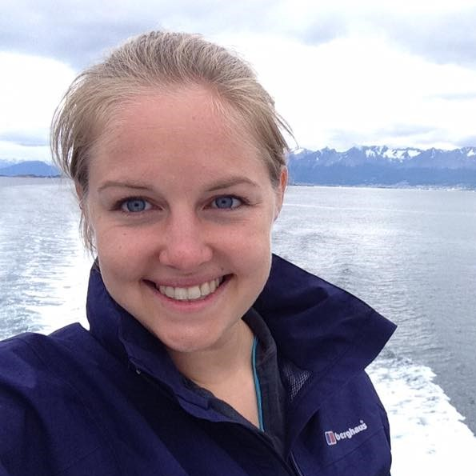
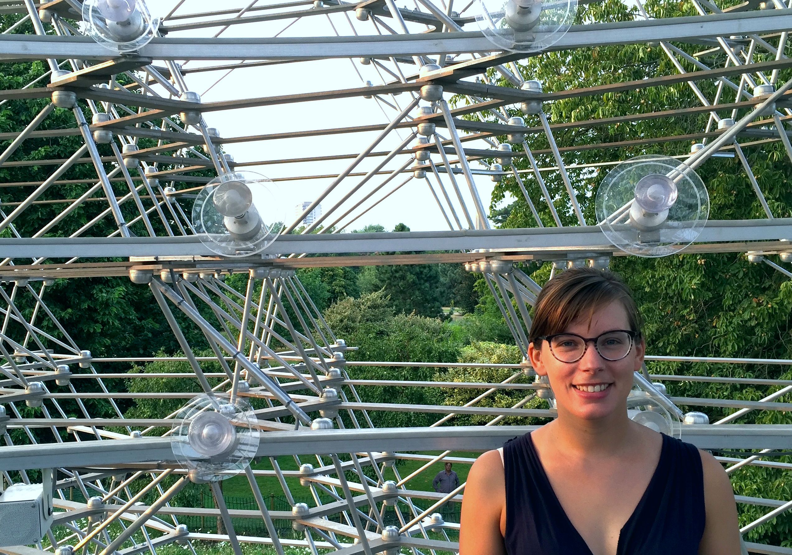
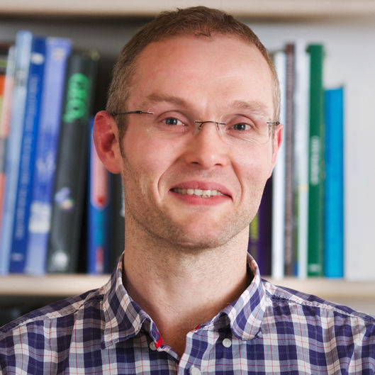
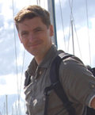

Research Team & Collaborators
See here for current opportunities to join the team.
Postdocs & Students
Silvia Ceausu (2020 - )

Silvia is working on the TRADE Hub, investigating the impacts of global trade on biodiversity. Email Silvia.
Tania Barychka (2019 - )
Tania is working on a Leverhulme-funded project, combining the Madingley General Ecosystem Model with Ecological Neutral Theory to make novel predictions about the impacts of human activities on the world's ecosystems. Email Tania.
Charlie Outhwaite (2018 - )

Charlie is working on the NERC-funded BIOTA project looking at interactions between biodiversity change and agriculture. Email Charlie.

Georgina Adams (2017 - )
Georgina is working as a post-doc, on the Dynamics of African Ecosystems Project. Email Georgina
Monica Ortiz (2018 - )

Monica is working mainly with Carole Dalin, on our NERC-funded BIOTA Project. Email Monica.
Lizzie Boakes (2017 - )
Lizzie works on the TRADE Hub, investigating the impacts of global trade on biodiversity. Email Lizzie.
Chloe Metcalfe

Chloe is doing a PhD Project together also with Terry Dawson, as part of the London NERC DTP, investigating the effectiveness of protected areas. Email Chloe.
Gonzalo Albadejo Robles (2018 - )

Gonzalo is doing a PhD project as part of the EU-funded Inspire4Nature Program. Gonzalo is investigating land use and climate impacts on biodiversity. Email Gonzalo.
Adrienne Etard (2018 - )

Adrienne is doing a PhD, investigating how species' traits influence their responses to climate and land-use change. Email Adrienne.
Joe Millard (2018 - )
Joe is doing a PhD, investigating how climate and land use influence pollinator communities. Email Joe.
Jessica Williams (2017 - )
Jess is doing a PhD, studying how climate modifies the response of biodiversity to land use. Email Jess.
Rory Gibb (2017 - )
Rory is doing his PhD, mainly working with Kate Jones, investigating the effect of environmental change on disease risk. Email Rory.
Guilherme Ferreira (2018 - )
I helped to supervise Gee for the last few months of his PhD project, investigating the effectiveness of protected areas in conserving mammal populations in Brazil. Gee passed his viva in July 2019, and his now doing a post-doc at UCL working on the Biome Health Project with Kate Jones
Peter McCann (2019 - 2020)
Peter did his masters project with me, investigating the interactions between biodiversity, agriculture and global commodity trade
Rhiannon Osborne-Tonner (2019 - 2020)
Rhiannon did a masters project with me, looking at how vertebrate diets influence their response to land-use change
Susie Cramp (2018 - 2019)
Susie did her masters research project with me, exploring impacts of land use on the phylogenetic diversity of vertebrates. Susie is now doing a PhD at the University of Western Australia
Diego Garcia-Vega (2017-2018)
Diego did his masters research project with me, investigating the impact of land-use change on biodiversity in the world's drylands. We are working on getting Diego's work published as a paper. Since graduating Diego has done internships with the United Nations, and is now completing another masters degree at Sciences Po in Paris
James Johnston (2019)
James did an MRes Project with us, investigating the impacts of cocoa on tropical biodiversity. James will soon be starting a PhD project at Cambridge University.
Georgie Hislop (2019)
Georgie did a masters project with me, working on the SENTINEL Project.
Philippa Oppenheimer (2019)
Philippa did a masters project with me, working on the SENTINEL Project.
Louise Sykes (2018)
Lou did a masters research project, exploring whether rare and common species respond differently to land use. Here work has been published as a paper in Conservation Biology. Lou is now working for the Hampshire Wildlife Trust
Robyn Kinnersley (2018)
Robyn did a masters research project, investigating responses of European pollinator species to land use
.Sophie Morrill (2017)
Sophie did a masters project with me, exploring how the ecological traits of reptile species influence their responses to land use.
Rungtip Wonglersak (2016)
Rungtip did a masters research project investigating the effects of climate change on ecosystems using the Madingley Model. Rungtip is currently doing a PhD joint between the University of Southampton and the Natural History Museum.
Laura Bentley (2015)
Laura did an internship at WCMC, using the PREDICTS Project data to investigate whether responses of species to land use vary depending upon trophic level. Laura is now doing a PhD at the University of Cambridge.
Martin Jung (2014)
While at UNEP-WCMC, I co-supervised Martin's masters project at the Centre for Macroecology, Evolution and Climate at Copenhagen University. He compared the estimates of the effects of land use made by the models of the PREDICTS Project with new data he collected in Kenya and Tanzania. A manuscript from his project is currently under review. Martin completed a PhD at the University of Sussex, and is now working as a post-doctoral researcher at the International Institute for Applied Systems Analysis in Vienna.
Katie Threadgill (2014)
Katie did an internship with me at UNEP-WCMC collating data on biodiversity before and after a land-use change. Katie is now doing a PhD in York University
Rebecca Senior (2013)
Rebecca did an extended internship at UNEP-WCMC, working on various projects. Rebecca completed a PhD at Sheffield University, and is now a post-doctoral researcher at Princeton University.
Edwin Pynegar (2012)
Edwin did an internship at UNEP-WCMC, in which he collected data with which to evaluate the predictions of the The Madingley Model and contributed to the early data collection for the PREDICTS Project. Edwin completed a PhD at Bangor University, and is now working at the Fundación Natura Bolivia NGO.
Abigayil Blandon (2012)
Abigayil did an internship at UNEP-WCMC, contributing to the early data collection of the PREDICTS Project. Abigayil spent some time working for the UK's Joint Nature Conservation Committee, then completed a masters and is now a researcher at the Stockholm Resilience Centre.
Robert Wilson (2011)
While at UNEP-WCMC, I supervised Robert's masters project with the now-discontinued Mathematics in the Living Environment (MILE) Programme at the University of York. Robert's project investigated spatial patterns in the average body mass of amphibian communities in Europe. Robert completed a PhD and some post-doctoral reseach at the University of Strathclyde and is now working at the Plymouth Marine Laboratory.
Main Collaborators
Andy Purvis

Andy is the Principal Investaigator of the PREDICTS Project, on which I used to work full time. I am now a project partner on PREDICTS, and Andy and I still collaborate on a number of projects, not least writing up many of the old PREDICTS analyses. Andy is based at the Natural History Museum in London.
Carole Dalin
Carole is the co-investigator on my NERC-funded project investigating interactions between biodiversity change and agriculture.
Ben Collen

Ben was the Principal Investigator on the Dynamics of African Ecosystems Project, which I am now leading. Tragically, Ben died of bone cancer in May 2018. Please consider making a donation for research on this under-studied form of cancer.
Mike Harfoot
Mike ‒ among many other things ‒ was one of the developers of the Madingley Model. We are still collaborating on various studies using this model, and also on some work comparing the prediction of the Madingley Model with those made by the PREDICTS models. Mike is based at the United Nations Environment Programme World Conservation Monitoring Centre in Cambridge.
Jeremy Kerr

Jeremy and I secured an International Exchanges grant from the Royal Society to investigate how bumblebee species are responding to climate and land-use change.
Sam Hill

Sam and I worked together on the PREDICTS Project, on which Sam still works full time. We are still collaborating on a study from the first phase of PREDICTS, and also on the comparison of predictions made by the Madingley and PREDICTS models. Sam is based mainly at the Natural History Museum in London.
Piero Visconti
Among his many projects, Piero does some work using the Madingley Model. More generally, Piero and I have a lot of shared research interests around understanding human impacts on ecological communities. Piero is now based jointly at the Zoological Society of London and at the Centre for Biodiversity and Environment Research at UCL.
Derek Tittensor
Derek was another of the original developers of the Madingley Model. We are still working on some studies using the model. Derek is based at the United Nations Environment Programme World Conservation Monitoring Centre and at Dalhousie University in Halifax, Canada.
James Rosindell

James and I have a project aiming to combine the strengths of Ecological Neutral Theory and the Madingley Model, to make better predictions of global biodiversity change. James is based at Imperial College London.